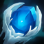

<
Welcome to patch 1.3!
>
Release 12/02/2019 01:02:20 AM
updated
Player
Base stats:
Attack damage
60
60 + (12 per level)
Life steal
0%
7% + (7% per level)
Armor
30
30 + (19 per level)
new
Iceborn Gauntlet
new
UNIQUE PASSIVE: Grants +65 armor and +100 bonus energy
new
UNIQUE PASSIVE: Become immute to damage if you fall below 5% maximum health for 10 seconds. After the duration, your base armor is doubled
Essence Reaver
updated
UNIQUE PASSIVE: Grants attack damage equals to 100% of your
total
base
armor if you fall below 50% maximum health
new effect
Now substracts the AD granted from its passive upon sale
Mortal Reminder
new
Grants +25 attack damage
new effect
Converts 50% of your bonus armor to base armor
removed
No longer reduces enemy lifesteal by 50%
updated
The Unstoppable force
new
item's icon has been updated
new effect
Grants +90 armor and +450 health
new effect
Steals the armor and attack damage of the first enemy that enters your range
new effect
Now substracts the AD and the armor granted from its passive upon sale
removed
No longer grants +50 armor and 500 health
removed
No longer doubles your armor and your health regenration and grants a shield equals to 10% of your maximum health if an enemy is in your range for 20 seconds
Bug fixes and other changes
Fixed bug where Frozen heart description in the item shop displayed 10% of maximum health instead of 8%
Energy bar is now colored
vive blue
instead of
pure blue
Items passive keyword changed from "PASSIVE: UNIQUE:" to "UNIQUE PASSIVE:"